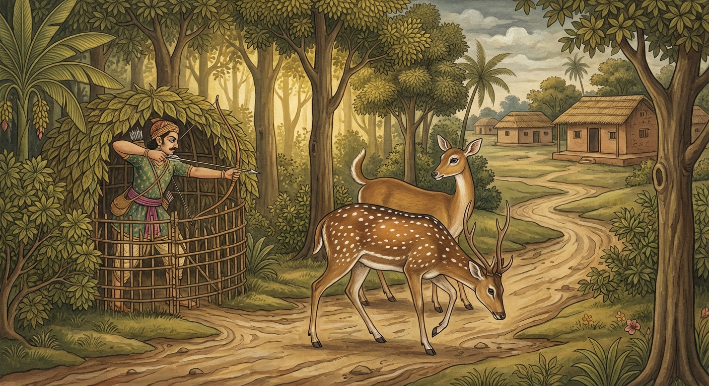

3. කණ්ඩි ජාතකය (13)
“ධිරත්ථු කණ්ඩිනං සල්ලං” යන මේ ජාතකය බුදුරජාණන් වහන්සේ ජේතවනාරාමයේ වැඩසිටියදී, පෙර බිරිඳ කෙරෙහි ඇති වූ ආශාව නිසා කලකිරුණු භික්ෂුවක් අරබයා දේශනා කළ සේක. ඒ පුවත අටවන නිපාතයේ ඉන්ද්රිය ජාතකයේදී හෙළිවනු ඇත. බුදුරජාණන් වහන්සේ ඒ භික්ෂුවට, “මහණ, ඔබ පෙරත් මේ ස්ත්රිය නිසා ජීවිතක්ෂයට පත්ව ගිනිදැල් රහිත ගිනි අඟුරු ගොඩක පැසුණෙහිය” යයි වදාළ සේක. භික්ෂූන් වහන්සේලා එම අර්ථය පැහැදිලි කරන ලෙස බුදුරජාණන් වහන්සේගෙන් ඉල්ලා සිටියහ. භාග්යවතුන් වහන්සේ භවාන්තරයෙන් වැසී තිබූ ඒ පුවත ප්රකට කළ සේක. මින්පසු භික්ෂූන්ගේ ආයාචනය ද, භවාන්තරයෙන් වැසී ගිය බව ද නොකියා, “අතීත කථාව ගෙනහැර දැක්වූහ” යයි මෙපමණක්ම කියමු. මෙපමණක් කී කල්හි ද ආයාචනයත්, වලාකුළු ගැබකින් සඳ එළියට ගන්නා සේ භවාන්තරයෙන් වැසී තිබූ පුවත හෙළි කිරීමත් යන සියල්ල පෙර කී ක්රමයටම යොදා දත යුතුය.
පෙර මගධ රට රාජගහ නුවර මගධ රජු රාජ්යය කරන සමයෙහි, මගධ වැසියන්ගේ අස්වනු නෙළන කාලයේදී මුවන්ට විශාල තර්ජනයක් එල්ල වෙයි. එබැවින් මුවෝ වනයේ පර්වත පාමුලට පිවිසෙති. එහි පර්වත ආශ්රිත වනයේ වසන එක් මුවෙක් ගම්මායිමේ වසන මුව දෙනක හා මිත්රත්වයක් ඇති කර ගත්තේය. මුවන් පර්වත පාමුලින් බැස නැවත ගම්පියසට එන කාලයෙහි, ඇය කෙරෙහි බැඳුණු සිතින් යුතුව හෙතෙම ඔවුන් සමඟම පහළට බැස්සේය. එකල්හි ඇය ඔහුට, “ස්වාමීනි, ඔබ පර්වතවාසී නුවණ මද මුවෙකි. ගම්පියස සැක සහිතය, භයානකය. අප සමඟ පහළට නොඑන්න” යැයි කීවාය. ඔහු ඇය කෙරෙහි බැඳුණු සිතින් යුක්ත වූ බැවින් නොනැවතී ඇය සමඟම ගියේය. මගධ වැසියෝ “මේ මුවන් පර්වත පාමුලින් බසින වෙලාවය” යි දැන මග සැඟවුණු කොටුවල රැක සිටිති. ඒ දෙදෙනා එන මගෙහි ද එක් වැද්දෙක් සැඟවුණු කොටුවක රැක සිටියේය. මුව දෙන මිනිස් ගඳ ආඝ්රාණය කොට, “මෙහි එක් වැද්දකු සිටිනවා ඇතැ” යි සිතා ඒ මෝඩ මුවා පෙරටු කොට තමා පසුපසින් ගියාය. වැද්දා එකම ඊ පහරින් මුවා එතැනම හෙළුවේය. මුව දෙන ඔහුට විදින ලද බව දැන, උඩ පැන සුළඟේ වේගයෙන් පලා ගියාය. වැද්දා කොටුවෙන් නික්ම, මුවා කපා, ගිනි ගසා, ගිනිදැල් නැති අඟුරු ගොඩේ මිහිරි මස් පුළුස්සා කා, පැන් බී, ඉතිරි මස් ලේ බිඳු වැගිරෙද්දී කදින් ගෙන දරුවන් සතුටු කරමින් නිවසට ගියේය.

එකල බෝසතාණෝ ඒ වන ලැහැබෙහි රුක් දෙවියකුව උපන්නාහුය. ඔහු මේ කරුණ දැක, “මේ මෝඩ මුවාගේ මරණය මව නිසා හෝ පියා නිසා සිදු වූවක් නොවේ. හුදෙක් කාම ආශාව නිසාම සිදු විය. සත්ත්වයෝ කාමය නිමිති කරගෙන සුගතියෙහි (මිනිස් ලොව) අත් පා කැපීම් ආදියට ද, දුගතියෙහි පස් වැදෑරුම් බන්ධන ආදී නොයෙක් දුකට ද පත්වෙති. මෙලොව අනුන්ට මරණ දුක ඇති කිරීම ද නින්දිතය. යම් රටක් කාන්තාවක් විසින් පාලනය කරයි නම්, අනුශාසනා කරයි නම්, ස්ත්රියක ප්රධාන වූ ඒ රට ද නින්දිතමය. යම් කෙනෙක් ස්ත්රියකගේ වසඟයට යත් ද, ඔවුහු ද නින්දිතයෝමය” යි එක් ගාථාවකින් නින්දා කටයුතු කරුණු තුනක් පෙන්වා දුන්හ. වන දේවතාවන් සාධුකාර දෙමින් සුවඳ මල් ආදියෙන් පූජා කරද්දී, මිහිරි හඬින් ඒ වන ලැහැබ නින්නාද කරමින් බෝසතාණෝ මෙම ගාථාවෙන් දහම් දෙසූහ.
“දැඩි කොට විදින්නා වූ, ඊ තල හා දුනු දරන පුරුෂයාට නින්දා වේවා! යම් ජනපදයක ස්ත්රියක් නායිකාව වූවා ද, ඒ ජනපදයට නින්දා වේවා! යම් කෙනෙක් ස්ත්රීන්ගේ වසඟයට ගියාහු ද, නින්දා ලද්දා වූ ඒ සත්ත්වයන්ට ද නින්දා වේවා!”
එහි ‘ධිරත්ථු’ යනු නින්දා කිරීමේ අර්ථය ඇති නිපාත පදයකි. එය මෙහිදී තැති ගැනීම් හා බියවීම් වශයෙන් නින්දා කිරීමෙහි යෙදුණු බව දත යුතුය. බිය සහ තැති ගැනීම යන දෙකින් යුත් බෝසත්හු මෙසේ කීහ. ඊතල ඇත්තේ ‘කණ්ඩී’ නම් වේ. එයට ‘කණ්ඩිනං’ යයි යෙදේ. ‘සල්ලං’ යනු හෙල්ලෙන් හා ඊයෙන් යුක්තය යන අර්ථය දෙයි. වෙනත් ක්රමයකින් කියතොත් හෙල්ල ඇත්තා ‘සල්ල’ නම් වේ. හෙල්ල වනාහි මහත් තුවාල මුවක් සාදා තදින් විදින හෙයින් ‘ගාළ්හවේධී’ (දැඩිව විදින්නා) නම් වේ. එබැවින් කුමුදු පත්රයක් වැනි මුවහත් ඇති, සෘජුව ගමන් කරන ඊතලයෙන්/හෙල්ලෙන් යුක්ත වූ පුරුෂයාට නින්දා වේවා! යන්න මෙහි අර්ථයි. ‘පරිණායිකා’ යනු අධිපතිනිය හෙවත් සංවිධායිකාවයි. ‘ධික්කිතා’ යනු නින්දා කරන ලද්දීය. මෙම ගාථාවේ ඉතිරිය නොගැඹුරු අරුත් ඇත්තේමය. මින් මතු මෙපමණවත් අරුත් නොදක්වා යම් යම් ගැඹුරු තැනක් වේ නම් එයම වර්ණනා කරන්නෙමි. මෙසේ එකම ගාථාවෙන් නින්දාවට හේතු වන කරුණු තුනක් දක්වා බෝධිසත්ත්වයෝ වනය ගුගුරුවා බුද්ධ ලීලාවෙන් දහම් දෙසූහ.
බුදුරජාණන් වහන්සේ මේ ධර්ම දේශනාව ගෙනහැර දක්වා චතුරාර්ය සත්යය ප්රකාශ කළ සේක. දේශනාව කෙළවර කලකිරී සිටි භික්ෂුව සෝවාන් ඵලයෙහි පිහිටියේය. ශාස්තෘන් වහන්සේ අතීත සහ වර්තමාන කථා වස්තු දෙක දක්වා අනුසන්ධි ගළපා ජාතකය නිමවා වදාළ සේක. මින්පසු ජාතක දේශනාවලදී “කථා වස්තු දෙක කියා” යන්න සඳහන් නොකර, “අනුසන්ධි ගළපා” යන්න පමණක් කියමු. එහි නොකියන ලද්දේ යට කී අනුසාරයෙන්ම යොදා ගත යුතුය.
එකල පර්වතවාසී මුවා වූයේ මේ (උකටලී) භික්ෂුවයි. මුව දෙන වූයේ පෙර බිරිඳයි. කාමයේ ආදීනව දක්වා දහම් දෙසූ රුක් දෙවියා නම් මම ම වෙමි.
තුන්වන කණ්ඩි ජාතක වර්ණනාව නිමාවිය.